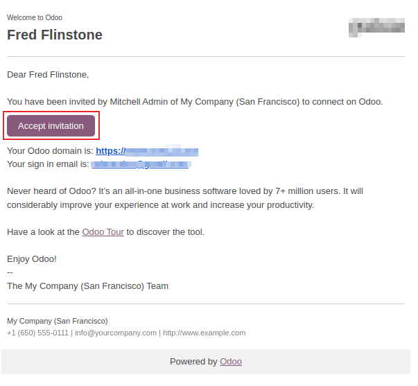
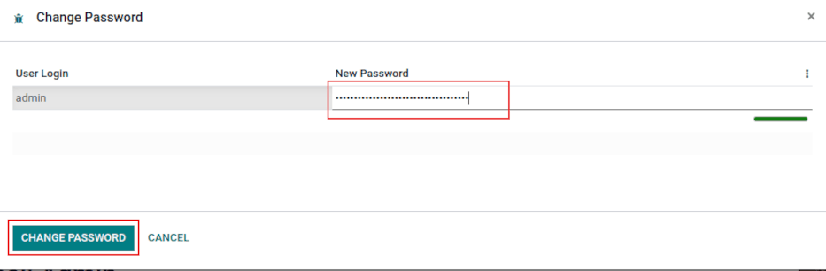

Usuarios¶
Odoo define un usuario como alguien que tiene acceso a una base de datos. Un administrador puede agregar tantos usuarios como necesite. Se pueden aplicar reglas para restringir el tipo de información a la que cada usuario puede acceder, así como también puede agregar y modificar usuarios y permisos de acceso en cualquier momento.
Agregar usuarios individuales¶
Para agregar nuevos usuarios vaya a y haga clic en Crear.
Complete el formulario con toda la información necesaria. En la pestaña Permisos de acceso elija el grupo de cada aplicación al que el usuario puede tener acceso.
La lista de aplicaciones mostrada corresponde a las aplicaciones instaladas en la base de datos.

Después de llenar todos los campos necesarios de la página, haga clic en Guardar. Se enviará automáticamente un correo electrónico de invitación al usuario al correo electrónico del campo Dirección de correo electrónico. El usuario debe hacer clic en el enlace incluido en el correo electrónico para aceptar la invitación y crear un inicio de sesión en la base de datos.
Advertencia
Si la empresa usa un plan de suscripción mensual, la base de datos se actualizará en automático para reflejar los usuarios que agregó. Si la empresa contrató un plan anual o multianual, aparecerá un mensaje de expiración en la base de datos. Es posible crear una cotización adicional al hacer clic en el mensaje para actualizar la suscripción. Otra opción es que envíe un ticket de soporte para resolver el problema.
Tipo de usuario¶
Con el modo de desarrollador activado, puede seleccionar un tipo de usuario en la pestaña Permisos de acceso del formulario del usuario, al que puede acceder desde .
Hay tres tipos de usuarios: Usuario interno, Portal y Público.

Truco
Los usuarios se consideran usuarios internos de la base de datos. Los usuarios del portal son usuarios externos que solo tienen acceso al portal de la base de datos para ver los registros. Consulte la documentación sobre esto en Acceso al portal.
Los usuarios públicos son los que visitan los sitios web desde el frontend.
Las opciones Portal y Público no permiten que el administrador elija los permisos de acceso. Estos usuarios tienen permisos de acceso específicos preestablecidos (como reglas de registro y menús restringidos) y por lo general no pertenecen a los grupos habituales de Odoo.
Desactivar usuarios¶
Para desactivar (es decir, archivar) un usuario, vaya a y seleccione la casilla ubicada a la izquierda del usuario o los usuarios que necesita desactivar.
Tras seleccionar el usuario que desea archivar, haga clic en el icono de ⚙️ Acciones y seleccione Archivar en el menú desplegable resultante. A continuación, haga clic en Aceptar en la ventana emergente Confirmación que aparece.
Peligro
Nunca desactive al usuario principal o administrador (admin). Los cambios a los usuarios admin pueden afectar de forma perjudicial la base de datos. Esto incluye admin impotente, lo que significa que ningún usuario en la base de datos podrá cambiar los permisos de acceso. Le recomendamos que se ponga en contacto con un consultor de Odoo o con nuestro equipo de soporte antes de realizar cambios.
Error: demasiados usuarios¶
El siguiente mensaje aparecerá si tiene más usuarios en una base de datos local que el número asignado a su suscripción a la versión Enterprise de Odoo.

Después de que el mensaje aparece, el administrador de la base de datos tiene 30 días para hacer algo antes de que la base de datos expire. El conteo regresivo se actualiza diario.
Para solucionar este error puede:
Para agregar más usuarios a su suscripción haga clic en el enlace Actualice su suscripción que aparece en el mensaje para validar la cotización adicional y pagar por los usuarios adicionales.
Desactive los usuarios y rechace la cotización de venta adicional.
Advertencia
Si la empresa usa un plan de suscripción mensual, la base de datos se actualizará en automático para reflejar los usuarios que agregó. Si la empresa contrató un plan anual o multianual, aparecerá un mensaje de expiración en la base de datos. Es posible crear una cotización adicional al hacer clic en el mensaje para actualizar la suscripción. Otra opción es que los usuarios envíen un ticket de soporte para resolver el problema.
El mensaje de expiración desaparecerá de forma automática luego de unos días después de que la base de datos tenga el número correcto de usuarios, cuando ocurra la próxima verificación.
Gestión de contraseñas¶
La gestión de contraseñas es una parte importante para garantizar a los usuarios acceso autónomo a la base de datos en todo momento. Odoo ofrece algunos métodos diferentes para restablecer la contraseña de un usuario.
Truco
Odoo tiene ajustes para especificar la longitud necesaria de una contraseña. Puede acceder a estos desde , luego escriba la longitud de contraseña deseada en el campo Longitud mínima de contraseña. El valor predeterminado es 8.

Restablecer contraseña¶
Es posible que en algunos casos los usuarios deseen restablecer su contraseña personal para contar con mayor seguridad y que sean los únicos con acceso a la contraseña. Odoo ofrece dos opciones distintas para restablecerla: una iniciada por el usuario y otra en la que el administrador se encarga de ello.
Habilitar restablecimiento de la contraseña desde la página de inicio de sesión¶
Es posible activar o desactivar el restablecimiento de contraseña desde la página de inicio de sesión. Esta acción se debe hacer por cada usuario y el ajuste está activo de forma predeterminada.
Para cambiar esta función, vaya a , active Restablecimiento de contraseña y después haga clic en Guardar.

En la página de inicio de sesión haga clic en Restablecimiento de contraseña para iniciar con el proceso de restablecimiento de contraseña y recibir un token de restablecimiento al correo electrónico que tiene registrado

Enviar instrucciones de restablecimiento¶
Vaya a , seleccione el usuario de la lista y haga clic en Enviar instrucciones de restablecimiento de contraseña en el formulario de usuario. Se le enviará automáticamente al usuario un correo electrónico con las instrucciones de restablecimiento.
Nota
El botón Enviar instrucciones de restablecimiento de contraseña solo aparece si el usuario ya confirmó el correo electrónico de invitación de Odoo. De lo contrario, aparecerá un botón para Volver a enviar el correo electrónico de invitación.
Este correo electrónico contiene todas las instrucciones necesarias para restablecer la contraseña, junto con un enlace que redirige al usuario a una página de inicio de sesión de Odoo.

Cambiar la contraseña del usuario¶
Vaya a y seleccione un usuario para acceder a su formulario. Haga clic en el icono ⚙️ Acciones, seleccione la opción Cambiar contraseña en el menú desplegable y después escriba una nueva contraseña en la columna Nueva contraseña de la ventana emergente Cambiar contraseña. Haga clic en Cambiar contraseña para confirmar el cambio.
Nota
Esta operación solo modifica la contraseña de usuarios de forma local, no afecta su cuenta de odoo.com.
Si necesita cambiar la contraseña de odoo.com, use la opción Enviar instrucciones para restablecer la contraseña. Las contraseñas de Odoo.com permiten acceder a la página Mis bases de datos y otras funciones del portal de usuarios.
Después de hacer clic en Cambiar contraseña, se le redirigirá a una página de inicio de sesión de Odoo donde puede volver a ingresar a la base de datos con una nueva contraseña.
Multiempresas¶
El campo Multiempresas en un formulario de usuario permite que el administrador le brinde permisos de acceso a ese usuario para varias empresas. Para configurar el entorno multiempresa para un usuario, vaya al usuario deseado en . Después, seleccione el usuario para abrir su formulario y configurarlo con el acceso multiempresa.
En Multiempresas en la pestaña Permisos de acceo tab, configure los campos Empresas permitidas y Empresa predeterminada.
El campo Empresas permitidas puede contener varias empresas, que serán las empresas a las que el usuario podrá acceder y editar, según los permisos de acceso configurados. La Empresa predeterminada es la empresa que verá el usuario primero siempre que abra sesión. Este campo solo puede contener una empresa.
Advertencia
Si el acceso multiempresa no se configura correctamente, esto puede resultar en comportamientos inconsistentes en el entorno multiempresa. Por esto, solo usuarios con mucha experiencia trabajando con Odoo deberían cambiar los derechos de acceso de los usuarios en bases de datos que tienen una configuración multiempresa. Para explicaciones técnicas, consulte la documentación de desarrollo en ../../../developer/howtos/company.

Ver también
Empresas